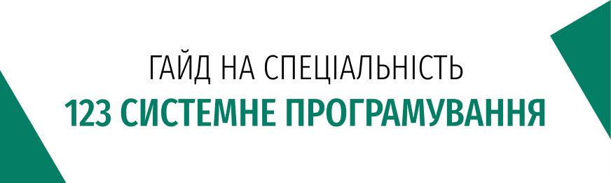
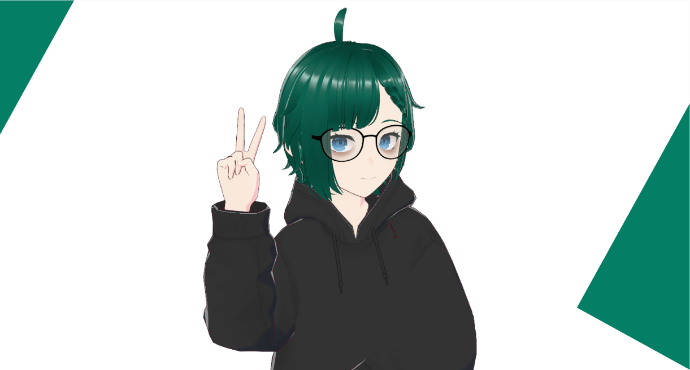
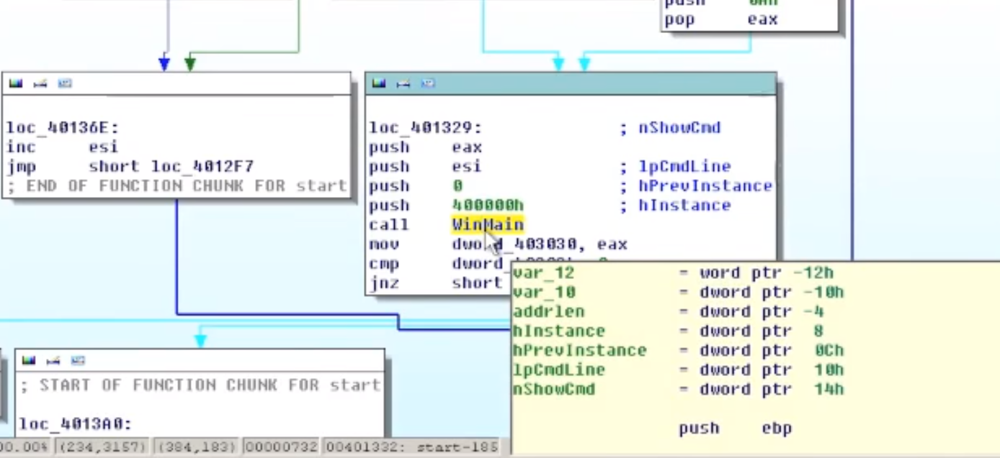
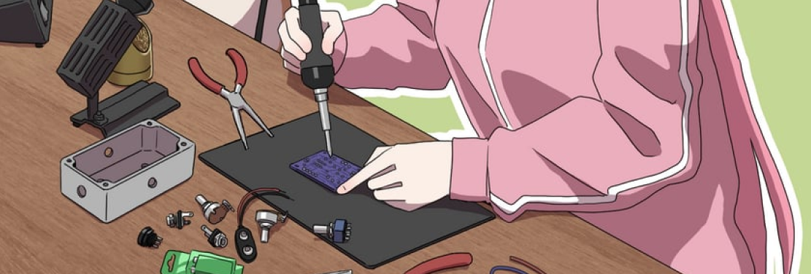
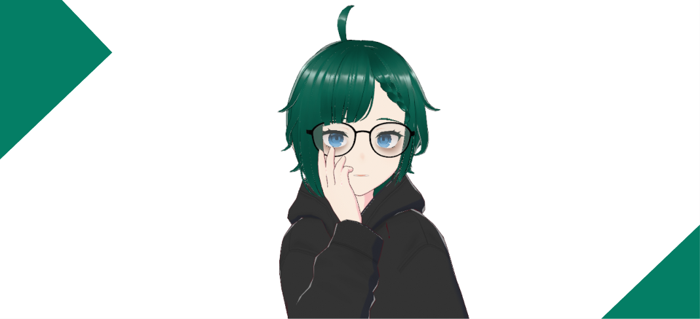
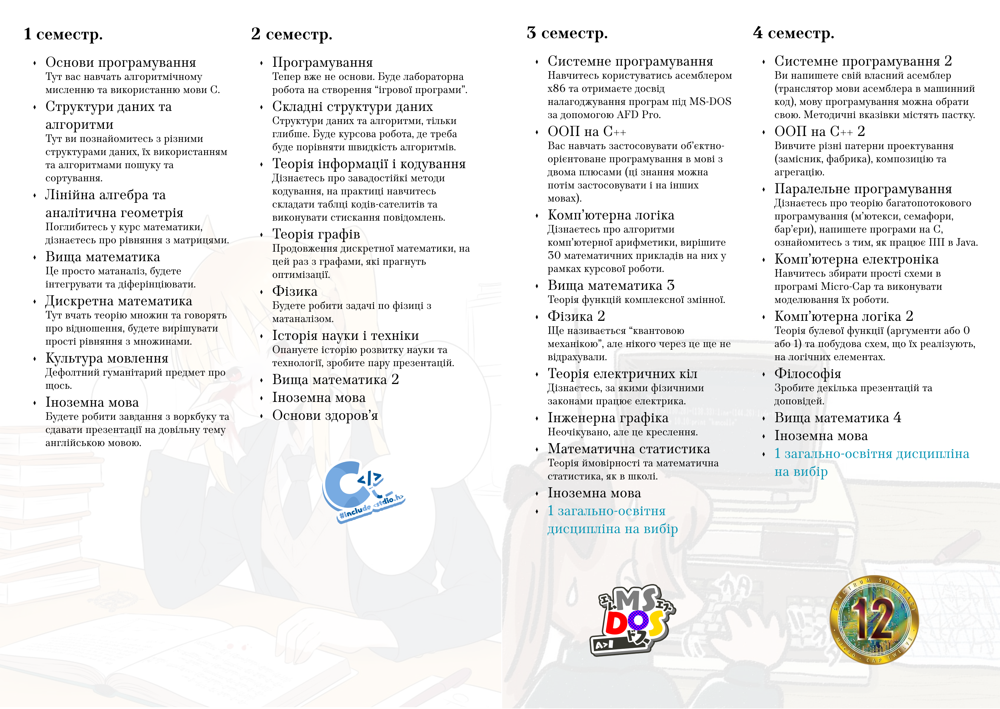
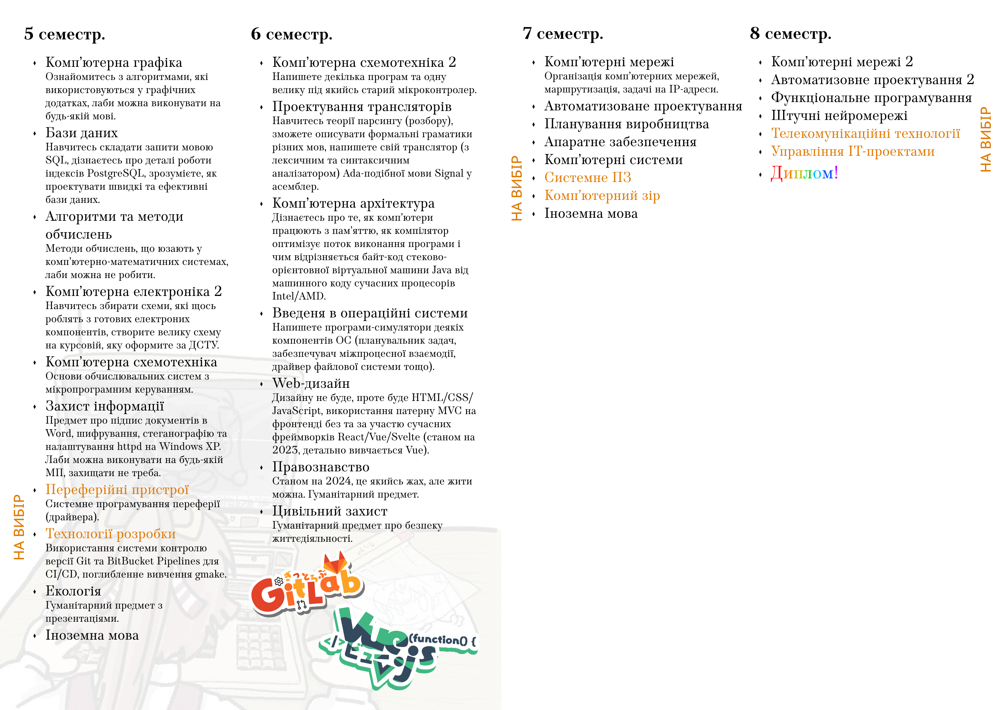
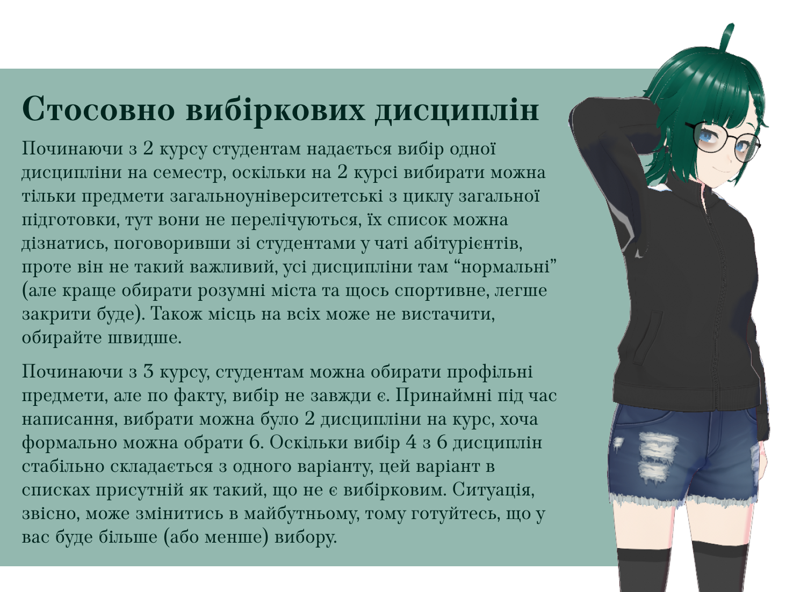

Гайд на 123#

Вступ#
На нашій катедрі здійснюється підготовка бакалаврів за освітньою программою «Системне програмування та спеціалізовані комп’ютерні системи». Не зважаючи на відносно страшну назву, освітня програма — широкого спектру та передбачає вивчення дисциплін з різних галузей комп’ютерної інженерії та розробки: від проектування електронних пристроїв до веб-програмування та принципів побудови баз даних. Особлива увага приділяється мовам програмування низького рівня: С/С++ та асемблеру. З цих мов ви отримаєте базову підготовку, проте вам також випаде можливість попрактикуватись в використанні Java, Python та pgSQL, а лабораторні та курсові роботи з деяких предметів ви зможете сдати на будь-якій зручній або цікавій мові програмування. На відміну від іншіх спеціальностей, студенти цієї освітньої програми також поглибленно вивчають теорію та практику проектування електронних пристроїв.

Щодо асемблеру#
Асемблер викладається на двох дисциплінах: системне програмування та комп’ютерна схемотехніка, загальнопрограмістські дисципліни виконуються іншими мовами та до low-level особливо відношення не мають. Якщо ви не хочете пов’язувати усе життя із асемблером та ембедедом та переймаєтесь на рахунок того, що після навчання ви нічого окрім програм під мертві ОС та драйвери вміть не будете, то не треба перейматись, практики по іншим відділам програмування буде достатньо. Якщо ж ви хочете поглибже вивчити комп’ютерну науку, занурившись у low-level темки, то тут теж все буде окей: в освітній програмі достатньо часу приділяється і цьому, але станом на 2024 рік, на асемблері пишуть програми під MS-DOS та старі мікроконтролери, сучасне програмування на цій мові в контексті ядра Linux, наприклад, залишено на самостійну освіту студента.

Щодо електроніки#
Не хвилюйтесь, у форкусі навчальної програми залишається саме програмування. У 2021-2024 роках про програмування завжди було більше, ніж предметів про електроніку. На кожен рік у вас, скоріш за все, буде лише один предмет про електроніку, на який ви будете звертати увагу. Детальніше дивіться розділ «Що ви вивчатимете».
Чи треба тут буде паяти плати? Ні, паяти плати не обов’язково, але цим можна (за бажанням) зайнятись під час дипломного проектування. За весь час навчання ви, ймовірно, жодний раз живу плату не побачите навіть :)

Чи складно тут навчатись?#
В порівнянні з іншими закладами, мабуть, дещо так. В порівнянні з іншими катедрами на ФПМ та факультетами з “трійки” ФІОТ/ІПСА/ФПМ, не дуже.
Щодо відрахувань, багато з них відбувається за бажанням студента (найбільш часта причина: “зрозумів, що не моє”) або у зв’язку з переведенням на іншу катедру, тому відрахування після 2 курсу це дуже нечаста річ. За невиконання навчального плану, на відміну від інших закладів, тут одразу відраховують, але на СПіСКС через це відлетіти буде складно.
Які знання з математики очікуються? Формально — ніякі, окрім шкільної програми. Звісно, мабуть ви шкільну програму ідеально не пам’ятаєте, але у вас мають бути знання з математики принаймні на рівні достатньому для того, щоб вам було комфортно приділяти багато часу розв’язуванню прикладів по матаналізу на першому курсі. Якщо ви гарно засвоїли вступ до матаналізу в школі або навчались у математичному лицеї, то це супер. Якщо ні, то бажано, щоб ви були не з тих людей, яким від математики стає нудно або зле. Проте через математику відраховують дуже мало, при умові що студент не забиває на навчання, можна сказати, що тільки через математику проблем в нього буде мало.
А програмувати вміти потрібно перед вступом? Вивчання програмування починається з нуля, досвід програмування чи хороші знання зі шкільної інформатики не потрібні, але будуть дуже великою перевагою. Люди, які програмували до вступу в цілому більш комфортно себе почувають і витрачають час на лабораторні роботи із більшим задоволенням. Зазначимо, що вмотивовані студенти (тих, кого не відрахували на 1 курсі) проблем із засвоєнням програмування, як правило, не мають.
Прохідний бал#
Прохідний рейтинговий бал на бюджет у 2023 році становив 158 балів (без квот та коеф.), на контракт конкурсу не було (будь-який бал, що проходить встановлені МОН вимоги до мінімального балу, був достатнім для зарахування на контракт).
Чи варто мені сюди вступати?#

Якщо тебе цікавить системне програмування або ти ще не визначився (або не визначилась) остаточно з майбутнім напрямом діяльності, то, мабуть, так, варто. У нас є:
Потужні викладачі по «базовим» дисциплінам Основи програмування, структури даних + алгоритми та ООП у нас викладають доволі непогано, універсальну базу вам тут дадуть нічим не гірше ніж на ФІОТі
Багато різних предметів: від системного програмування до веба До кінця навчання точно щось сподобається та у вас буде розуміння куди йти працювати Якість королівська, а прохідні народні Якщо ви вже поставили другим пріоритетом після 121 якусь муть у КНУТД, залазьте назад в особистий кабінет та ставте 123 ФПМ, тут теж буде престижно та цікаво
Вступ на 121/113 «з пересадкою»#
Відомі випадки, коли люди вступають на бюджет 123 з метою переметнутись після першого курсу на більш привабливу спеціальність, на яку вже не вистачило балів. Це називається переведення і, згідно із положеннями КПІ, така можливість існує, але для цього потрібна згода завідуючих катедр.
Достовірний спосіб отримати цю згоду невідомий, були випадки коли її отримували, але якщо ви поступаєте сюди суто для переведення кудись ще, враховуйте, що налагодженого процесу для цього не існує, готуйтесь до крутки.
Якщо говорити простіше, не розраховуйте на таке взагалі, цілком може бути так, що у вас це зробити не вийде. Також зверніть увагу, що на ФПМ інші спеціальності не мали конкурсу на контракт (брали всіх, у кого прийняли заяви). Більш реалістичною ідеєю буде поступити туди на контракт і перевестись туди ж на бюджет (принаймні, зі 123 так виходило у людей).
Перспективи працевлаштування#
TL;DR: після отримання диплому просто так нікого нікуди не беруть, іноді студентам нашої катедри пропонують літні курси та стажування, але це тільки по embeded. Якщо будете шукати щось самостійно: не хвилюйтесь, работодавці не бачать різниці між 123 та 121.
Ким працюють випсукники спецільності? Точні дані не збираються, але можна припустити, що більшість йде працювати програмістами, загалом туди, куди йдуть випускники 121 спеціальності інших катедр, факультетів та навчальних закладів. Для студентів СПіСКС іноді доступні пришвидшені набори до літніх шкіл певних компаній, звідки можна попасти на стажування, але профіль таких компаній — системне програмування або інженерія комп’ютерних систем, за вебом та мобайлом треба буде шукати стажування та готуватись до них самостійно.
Коли можна починати працювати? Це, звісно, ніяк не обмежується, але половина працює після отримання диплому, половина починає працювати з 3 або 4 курсу. Варто зазначити, що навчання у КПІ загалом є більш вимогливим, тому поєднувати навчання та роботу може бути дещо складно.
Інші питання#
Скільки тут навчаються? Навчання займає 8 семестрів, тобто 3 роки та 10 місяців, за які ви отримаєте 240 кредитів ЄКТС.
Про що буде диплом? Теми погоджуються з научним керівником (якого обирає студент із деяких викладачів), але загалом диплом пишеться про якусь програму розміром більше ніж курсова робота або про якийсь електронний пристрій (схема + програма для МК).
Чи треба для навчання ноутбук/ПК і який саме? Під час дистанційного навчання ноутбук не потрібен. Під час очки може знадобитсь. Обирати варто такий, який потягне софт для роботи з С або С++ як мінімум. Рекомендується брати або макбук, або щось на сучасному процесорі, 16Гб DDR4 та з системою на NVMe диску.
Освітня программа#
Як казалось раніше, освітня програма доволі «широка». На 1 курсі студентів ознайомлюють з мовою програмування С та алгоритмами, із математики присутній матаналіз та дискретна математика (разом з теорією множин, графів та теорією інформації та кодування). З’являюється фізика.
На 2 курсі поглиблюються знання в області програмування: викладається ООП на С++, асемблер під MS-DOS, комп’ютерна графіка, паралельне програмування (багатопотокове) на pthreads (C) та Java. Зникає фізика, з’являється теорія електричних кіл та комп’ютерна електроніка, на якій ви навчитесь моделюванню електричних схем в програмі Micro-Cap та проектуванню в Altium Designer. Математика продовжиться, також вас навчать алгоритмам, за якими процесори роблять математичні операції.
На 3 курсі асемблер продовжується вже під мікроконтролери у складі дисципліни «Комп’ютерна схемотехника», вас змусять написати свій транслятор, за бажанням можна ще написати пару алгоритмів з комп’ютерної алгебри, а також будуть викладатись бази даних та фронтенд.
Зверніть увагу, що все вищезазначене було актуальним на момент 2023 року. Список та зміст дисциплін наведено для ознайомлювальних цілей (щоб абітурі було зрозуміло, що вони вивчатимуть, про що спеца взагалі), його наповнення може змінюватись катедрою без попереднього повідомлення.
1-2 курс

3-4 курс


Дякуємо за увагу і сподіваємось цей гайд допоміг трохи більше зрозуміти що роблять на 123 спеці;)
З любов'ю, СР ФПМ
☆*: .｡. o(≧▽≦)o
Якщо залишились питання, писати сюди^_^